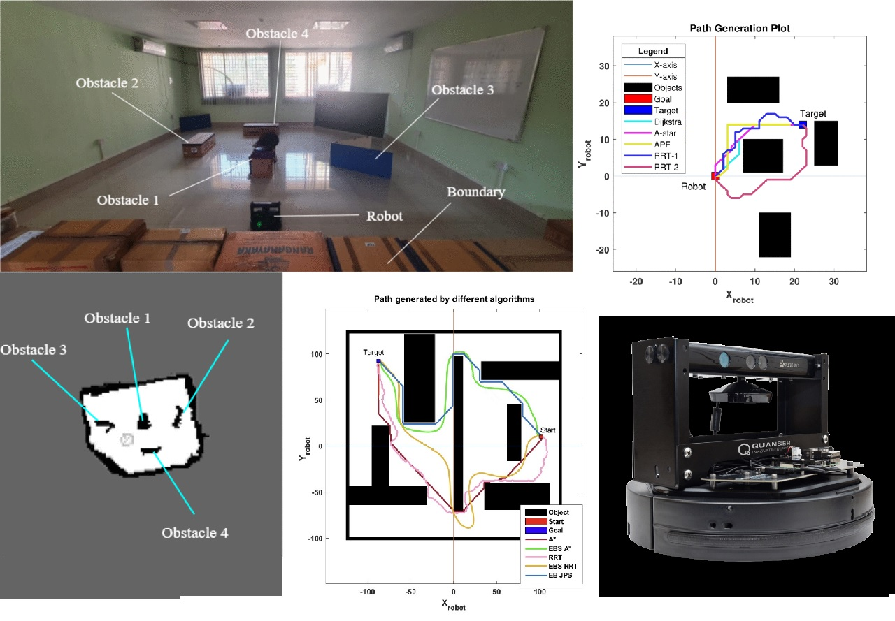

Comparison and modifications of Path Planning Algorithms
Undergrad final year undertaking
Designed a custom testing environment with obstacles and employed a 2-wheel differential drive Qbot, programming its functionalities using Matlab for testing classical and modified path planning algorithms. Developed the controller and Simulink pipelines for motion planning using pre-scanned maps. Implemented classical algorithms like A*, Djikstra's, Rapidly Exploring Random Tree (RRT), and Artificial Potential Fields (APF). Simulated and implemented classical algorithms like A*, Djikstra’s, Rapidly exploring random tree (RRT), and Artificial potential fields(APF). Based on observations, easily augmentable modifications of graph based A* and RRT were implemented and tested with positive results. To prove easiness and effectiveness of adding prior mentioned augmentations, we implemented the Jump Point Search variation of A* and tried out the modifications on JPS A*. The results were positive. Authored two research papers as part of this project.
Publications
-
Implementation of Classical Path Planning Algorithms for Mobile Robot Navigation: A Comparison
A. R. Warrier, P. Nedunghat, M. K. Bera and K. Nath, "Implementation of Classical Path Planning Algorithms for Mobile Robot Navigation: A Comprehensive Comparison," 2022 International Conference on Electrical, Computer, Communications and Mechatronics Engineering (ICECCME), Maldives, Maldives, 2022, pp. 1-6, doi: 10.1109/ICECCME55909.2022.9988092.
-
Multi-Feature Enhancement of Standard and Modified A-star and RRT Algorithms
A. R. Warrier, P. Nedunghat, M. K. Bera and K. Nath, "Multi-Feature Enhancement of Standard and Modified A-star and RRT Algorithms," (Accepted)(Not yet viewable)